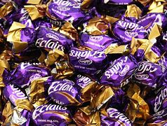
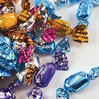

Eclairs are a confectionery currently manufactured by Cadbury. Invented by the Birmingham-based confectionery company Taveners in 1932, they were adapted into a Dairy Milk version of Eclairs in 1965.They are available in bags or rolls and can be found in the Cadbury Heroes selection. Eclairs are currently available in the United Kingdom, Ireland, Australia, Kenya, Hong Kong, South Africa and India, where they are known as "Dairy Milk Eclairs". In 2013 Mondelēz International updated the UK ingredients list to add in the inclusion of palm oil in the recipe. In 2013 Cadbury rebranded its product to Choclairs in India.

